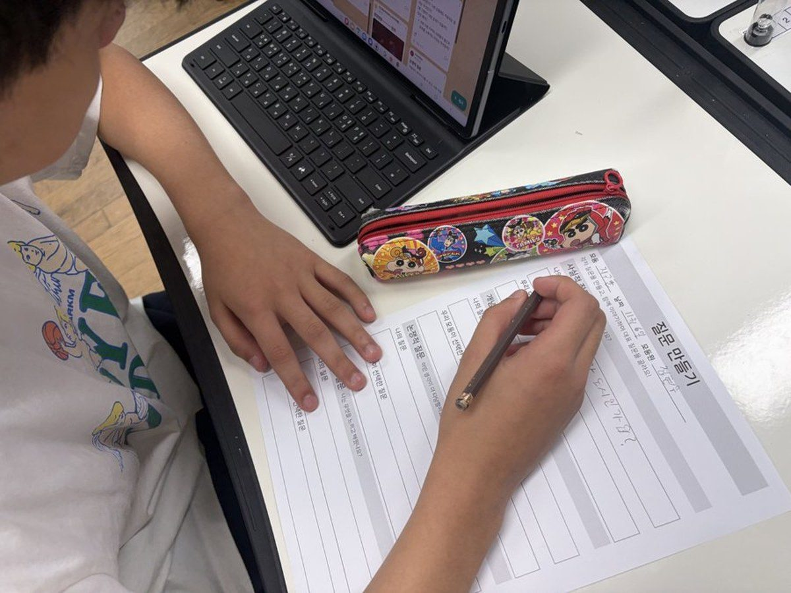
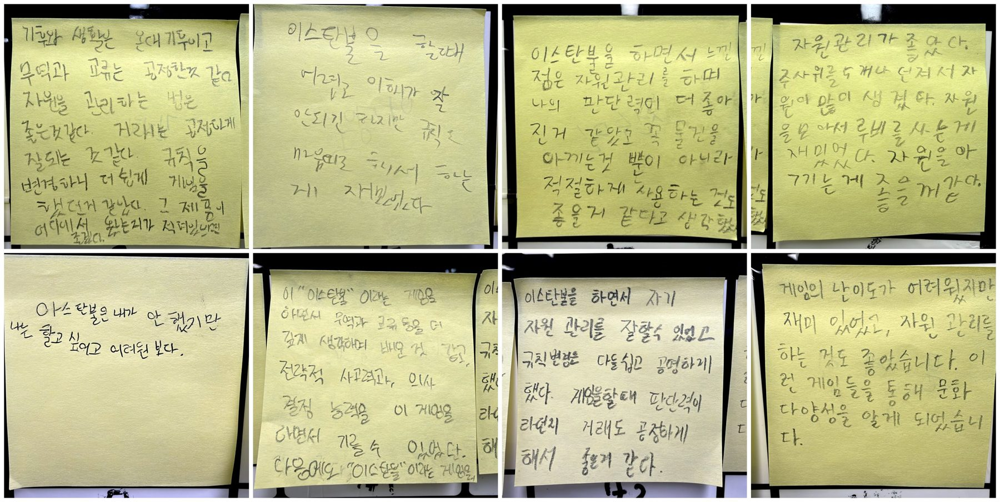
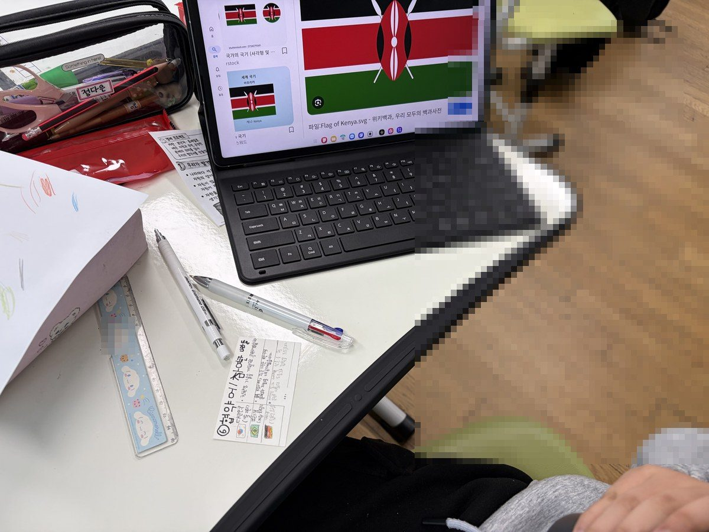
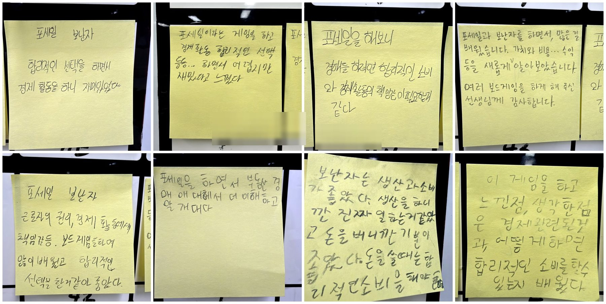
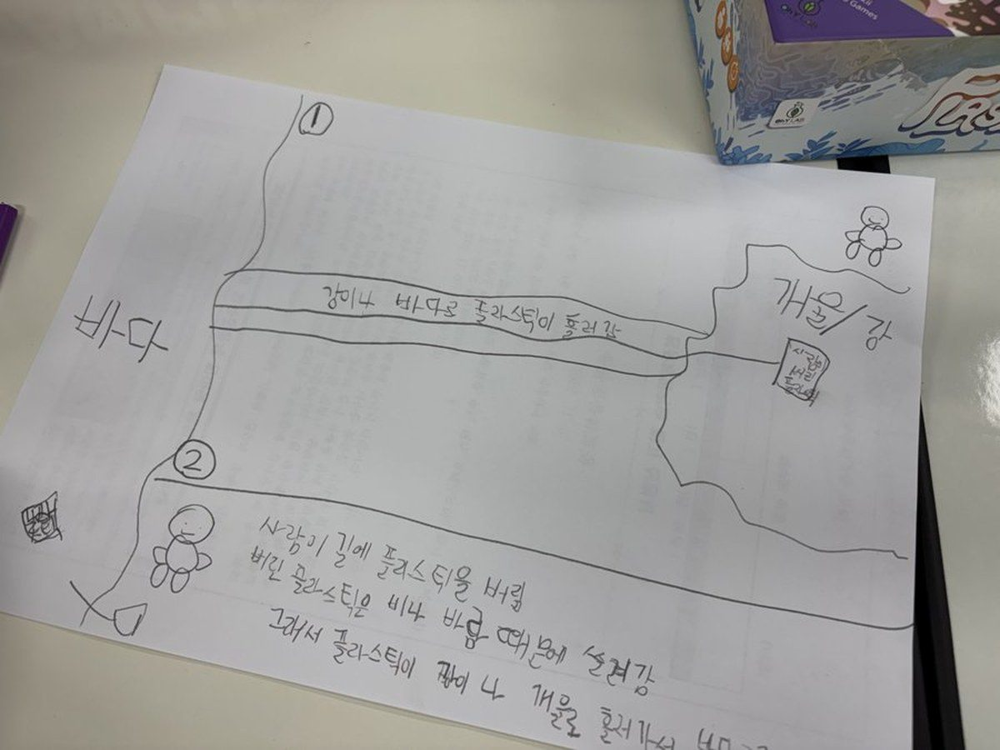
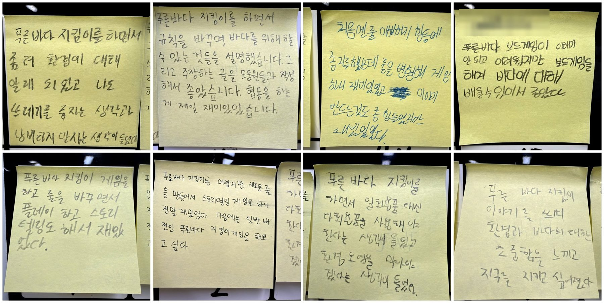
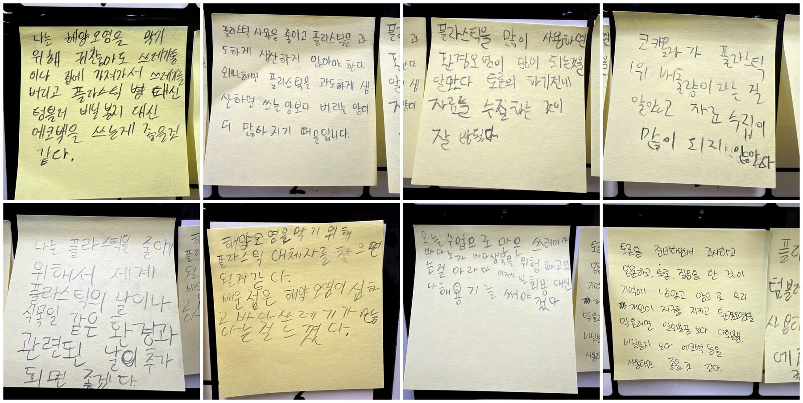

세 프로젝트 과정안
과정안의 S(학생 반응)는 수업 흐름에 따른 예상 반응입니다. 학생 글(탐구 게시판, 탐구 카드, 붙임쪽지)은 뜻을 그대로 살리고 맞춤법과 띄어쓰기만 다듬었습니다. 학생 얼굴과 이름은 가렸습니다.
문화 프로젝트 — 다름을 이해하다 (P)
본 차시 교수·학습 과정안 바로 가기
1. 주제 및 개관
본 프로젝트는 '세계 여러 지역의 문화는 왜 서로 다를까?'라는 질문을 보드게임으로 풀어 가는 수업이다. 6학년 학생들은 교과서에서 세계 여러 나라의 이름과 위치를 배우지만, 학교 밖에서 다른 나라를 직접 만나 본 경험은 적다. 그래서 세계 단원은 외워야 할 낱말의 목록이 되기 쉽고, 다른 문화를 우리의 기준으로 '이상하다'고 여기기도 한다. 이에 단원을 G.A.M.E.(게임으로 경험하기 – 질문하고 탐구하기 – 실제 세계와 연결하기 – 다시 선택하고 실천하기)의 흐름으로 재구성하였다. 학생들은 마라케시(모로코), 이스탄불 주사위 게임(튀르키예), 로꼬라마(고산 지역), 하나비(일본) 네 가지 보드게임을 익히고 하면서, 게임 상자 속 동전과 양탄자, 카드 속 모자와 풍경에서 그 지역의 문화를 찾아낸다. 찾은 것은 패들렛 탐구 게시판에 조사해 올리고, 친구의 글에 질문을 달고 답하며 탐구를 넓힌다. 이어 게임 속 모습과 실제 세계, 우리나라의 생활을 견주며 문화가 다른 까닭을 위치와 기후로 설명하고, 탐구 카드를 모아 '세계 문화 탐구 지도'를 완성해 교실과 가정에 나눈다. 게임마다 담당 학생이 '꼬마 선생님'이 되어 먼저 규칙을 익히고 친구를 도우며, 게임이 끝날 때마다 전원이 붙임쪽지에 후기를 남긴다.
2. 기대효과
가. 보드게임의 구성물에서 그 지역의 문화를 찾아 조사하며, 세계 여러 지역의 문화가 자연환경(위치·기후)과 관련되어 있음을 이해할 수 있다.
나. 친구의 조사 글에 질문하고 답하는 과정에서 우리의 기준이 아닌 그 문화 안의 사람의 눈으로 생각해 보며 다른 관점을 존중하는 태도를 기를 수 있다.
다. 꼬마 선생님, 게임별 후기 게시판, 세 모둠 운영 등의 게이미피케이션 요소로 세계 단원에 대한 흥미와 몰입을 높이고, 스스로 익히고 친구를 돕는 힘을 기를 수 있다.
3. 교육과정 재구성 계획
| 단원 | 단계 | 주제 | 차시 | 차시별 학습 활동 |
|---|---|---|---|---|
| 지구, 대륙 그리고 국가들 / 세계의 자연환경(보드게임으로 떠나는 세계 문화 여행) | G 게임으로 경험하기 | 꼬마 선생님과 게임 익히기 | 1~2 | ∘ 꼬마 선생님이 쉬운 규칙 안내 자료로 게임 소개하기∘ 네 가지 게임 구성물 살펴보기 |
| G [본 차시 ①] | 게임 속에서 문화 찾기 | 3~4 | ∘ 마라케시·이스탄불 하기∘ 구성물에서 그 지역의 문화를 한 사람이 하나씩 찾기 | |
| G | 고산 지역과 일본으로 | 5~6 | ∘ 로꼬라마·하나비 하기, 문화 찾기∘ 게임 분석과 후기 쓰기 | |
| A [본 차시 ②] | 찾은 문화 조사하고 질문하기 | 7~8 | ∘ 찾은 것을 조사해 패들렛에 올리기∘ 친구 글에 질문 달고 답하기 | |
| A | 탐구 질문 세우기 | 9 | ∘ 네 가지 질문 만들기, 탐구 카드에 탐구 질문 쓰기 | |
| M [본 차시 ③] | 게임과 실제, 우리나라 견주기 | 10~11 | ∘ 게임 속 모습과 실제 견주기∘ 생활 모습이 다른 까닭을 위치·기후로 설명하기 | |
| E [본 차시 ④] | 세계 문화 탐구 지도 완성하기 | 12~13 | ∘ 탐구 카드를 세계지도에 붙이고 잇기∘ 교실 게시, 가정에 안내하기 |
4. 수업의 목표 및 성취기준
| 목표 | 성취기준 |
|---|---|
| 보드게임에서 찾은 세계 여러 지역의 문화를 조사하고, 그 문화가 자연환경과 어떤 관계가 있는지 설명하며 다른 문화를 존중하는 태도를 기른다. | [6사09-02] 국가의 위치와 영토 / [6사10-01] 지형과 삶의 모습 / [6사10-02] 기후와 인간 생활 |
5. 평가계획
| 평가 내용 | 평가 기준 | 척도 | 평가 방법 |
|---|---|---|---|
| 보드게임에서 찾은 문화를 조사하여 그 지역의 자연환경과 관련지어 설명하고, 다른 문화를 존중하는 태도를 보이는가? | 게임 속 문화를 조사하여 위치·기후와 관련지어 설명하고, 그 문화 안의 사람의 입장에서 질문하거나 판단한다. | 상 | 관찰평가,산출물평가(패들렛 조사 글, 탐구 카드),자기·동료평가 |
| 게임 속 문화를 조사하여 설명하나, 자연환경과 관련짓는 데 도움이 필요하다. | 중 | ||
| 교사나 모둠원의 도움을 받아 게임 속 문화를 하나 찾아 조사한다. | 하 |
6. 지도상의 유의점
가. 게임을 익히는 데 시간이 많이 들지 않도록 꼬마 선생님이 먼저 익히고 쉬운 규칙 안내 자료를 준비하게 한다. 영상부터 보여 주지 않고 구성물과 설명서를 먼저 탐색하게 한다.
나. 게임의 승패보다 '게임 속에서 무엇을 찾았는가'에 주목하게 하고, 게임이 끝날 때마다 전원이 후기를 남기게 한다.
다. 게임 속 모습은 실제를 단순하게 그린 것일 수 있으므로, 조사한 자료와 반드시 견주어 보게 한다.
라. 다른 문화를 '이상하다', '신기하다'에 머물지 않고 그렇게 사는 까닭을 찾도록 발문한다.
마. 패들렛에는 실명이나 얼굴이 드러나지 않게 하고, 조사 글에는 출처를 밝히게 한다.
7. 본 차시 교수·학습 과정안
P-① 게임 속에서 문화 찾기 (G 단계, 3~4/13차시)
| 관련교과 | 사회 | 적용 학년 | 6학년 |
|---|---|---|---|
| 학습주제 | 마라케시와 이스탄불에서 문화 찾기 | 해당 차시 | 3~4/13 |
| 학습목표 | 보드게임을 하며 구성물에 담긴 그 지역의 문화를 찾을 수 있다. | ||
| 수업의 흐름 | 도입: 꼬마 선생님 규칙 안내 → 전개: [활동1] 마라케시 하기 / [활동2] 이스탄불 하기 / [활동3] 게임 속 문화 찾기 → 정리: 찾은 것 나누기, 후기 쓰기 | ||
| 학습 형태 | 모둠(세계·시민·지구촌 세 모둠), 전체 | 학습 모형 | 게이미피케이션, 탐구학습 |
| 교수·학습 자료 | 마라케시, 이스탄불 주사위 게임, 꼬마 선생님 규칙 안내 자료, 붙임쪽지, 후기 게시판 | ||
| 단계 | 학습 요소 | 교수·학습 활동 | 시간 (80′) | 자료(☞) 및 유의점(※) |
|---|---|---|---|---|
| 도입 | 동기 유발학습 문제 확인 | ◎ 게임 상자 살펴보기T: 이 상자 속 물건들은 어느 나라의 것일까요?S: 양탄자가 있어요. 동전에 낯선 글자가 있어요.◎ 꼬마 선생님의 규칙 안내S(꼬마 선생님): (쉬운 규칙 안내 자료로 게임 방법을 설명한다.)◎ 학습 문제: 보드게임 속에서 그 나라의 문화를 찾아봅시다. | 10′ | ☞ 게임 상자, 규칙 안내 자료※ 꼬마 선생님이 짝을 이루어 모둠마다 들어가게 한다. |
| 전개 | 게임하기문화 찾기 | ◎ [활동1] 마라케시 하기상인 말 '아쌈'을 움직이며 양탄자를 깔고, 다른 사람의 양탄자에 서면 동전을 낸다.T: 이 물건은 실제로 있는 걸까?◎ [활동2] 이스탄불 주사위 게임 하기주사위를 던져 상품을 모으고 루비를 사는 게임을 한다.◎ [활동3] 게임 속 문화 찾기한 사람이 하나씩 구성물에서 문화를 찾아 붙임쪽지에 적는다.S: 동전이 모로코의 화폐 같아요. 신발 모양이 특이해요.S: 이스탄불에는 보석 상인과 향신료가 있어요. | 55′ | ☞ 마라케시, 이스탄불 주사위 게임※ 게임 중 궁금한 규칙은 꼬마 선생님이 바로 답하게 한다.※ 승패보다 '찾은 것'에 주목하게 한다. |
| 정리 | 나누기성찰 | ◎ 모둠별로 찾은 문화 발표하기◎ 게임별 후기 게시판에 붙임쪽지 후기 붙이기모로코 마라케시에 있는 물건이 보드게임에 다 있으니까 모로코 문화의 특징을 알고 하니까 재밌다.◎ 차시 예고: 로꼬라마와 하나비 | 15′ | ☞ 후기 게시판(번호 칸)※ 전원이 후기를 남기게 한다. |
P-② 찾은 문화 조사하고 질문하기 (A 단계, 7~8/13차시)
| 관련교과 | 사회, 창의적 체험활동 | 적용 학년 | 6학년 |
|---|---|---|---|
| 학습주제 | 게임 속 문화를 조사하고 친구의 글에 질문하기 | 해당 차시 | 7~8/13 |
| 학습목표 | 게임에서 찾은 문화를 조사하여 올리고, 친구의 조사 글에 까닭과 근거를 묻는 질문을 할 수 있다. | ||
| 수업의 흐름 | 도입: 찾은 문화 떠올리기 → 전개: [활동1] 조사해 패들렛에 올리기 / [활동2] 친구 글에 질문 달기 / [활동3] 질문에 답하기 → 정리: 좋은 질문 나누기 | ||
| 학습 형태 | 개별, 모둠 | 학습 모형 | 질문 중심 탐구학습 |
| 교수·학습 자료 | 태블릿, 게임별 패들렛 탐구 게시판, 네 가지 질문 안내 | ||
| 단계 | 학습 요소 | 교수·학습 활동 | 시간 (80′) | 자료(☞) 및 유의점(※) |
|---|---|---|---|---|
| 도입 | 전시 학습 상기학습 문제 확인 | ◎ 게임에서 찾은 문화 떠올리기T: 지난 시간에 게임에서 무엇을 찾았나요?S: 마라케시의 동전, 바부슈, 로꼬라마의 모자요.◎ 학습 문제: 찾은 문화를 조사하고, 친구의 글에 질문해 봅시다. | 10′ | ☞ 붙임쪽지 기록※ 한 사람이 하나씩 맡아 겹치지 않게 한다. |
| 전개 | 조사하기질문하기답하기 | ◎ [활동1] 조사해 패들렛에 올리기맡은 물건이 실제로 있는지, 어떤 의미가 있는지 조사해 사진과 함께 올린다.T: 이스탄불이 상업의 중심지가 된 까닭은?S: 아시아랑 유럽이랑 이어져 있어서요.◎ [활동2] 친구 글에 질문 달기사실적·개념적·논쟁적·성찰적 질문 중 하나를 골라 댓글로 단다.왜 바부슈에는 뒤꿈치 부분이 없나요?일본 사람들한테는 유카타가 편한 옷 아닙니까?◎ [활동3] 질문에 답하기글쓴이가 다시 찾아보고 답을 단다. | 55′ | ☞ 태블릿, 패들렛 탐구 게시판※ 출처를 밝히게 한다.※ '좋아요'보다 '왜?', '정말?'을 묻는 질문을 칭찬한다. |
| 정리 | 나누기 | ◎ 생각을 바꾸게 한 질문 나누기T: 유카타 질문은 무엇이 달랐을까요?S: 일본 사람의 입장에서 생각했어요.◎ 차시 예고: 탐구 질문 세우기 | 15′ | ※ 관점을 바꾼 질문을 함께 칭찬한다. |
P-③ 게임과 실제, 우리나라 견주기 (M 단계, 10~11/13차시)
| 관련교과 | 사회 | 적용 학년 | 6학년 |
|---|---|---|---|
| 학습주제 | 생활 모습이 다른 까닭 찾기 | 해당 차시 | 10~11/13 |
| 학습목표 | 게임 속 모습과 실제 세계, 우리나라의 생활을 견주어 생활 모습이 다른 까닭을 위치·기후와 관련지어 설명할 수 있다. | ||
| 수업의 흐름 | 도입: 탐구 질문 확인 → 전개: [활동1] 게임 속 모습과 실제 견주기 / [활동2] 우리나라와 견주기 / [활동3] 까닭 찾기 → 정리: 탐구 카드 쓰기 | ||
| 학습 형태 | 모둠, 전체 | 학습 모형 | 비교 탐구학습 |
| 교수·학습 자료 | 태블릿, 세계지도, 기후 자료, 탐구 카드 | ||
| 단계 | 학습 요소 | 교수·학습 활동 | 시간 (80′) | 자료(☞) 및 유의점(※) |
|---|---|---|---|---|
| 도입 | 학습 문제 확인 | ◎ 지난 시간에 세운 탐구 질문 확인하기일본에서 불꽃놀이가 여름에 자주 열리는 이유는 무엇일까?◎ 학습 문제: 생활 모습이 다른 까닭을 찾아봅시다. | 10′ | ☞ 탐구 질문 목록 |
| 전개 | 견주기까닭 찾기 | ◎ [활동1] 게임 속 모습과 실제 견주기T: 게임 속 모습은 실제와 같을까?S: 하나비의 불꽃 축제는 실제로 여름에 열려요.◎ [활동2] 우리나라와 견주기옷, 음식, 집, 축제를 우리나라와 비교한다.◎ [활동3] 까닭 찾기T: 생활 모습이 다른 까닭은?S: 고산 지역은 높고 추워서 라마와 알파카를 길러요.세계지도에서 위치와 기후를 확인한다. | 55′ | ☞ 세계지도, 기후 자료※ '신기하다'에 머물지 않고 까닭을 찾게 한다.※ 위치를 지도에서 꼭 확인하게 한다. |
| 정리 | 탐구 카드 | ◎ 탐구 카드에 자연환경, 생활 문화, 느낀 점 쓰기고산 지역이 유럽에 있는 줄 알았는데 남아메리카에 있었다.◎ 차시 예고: 세계 문화 탐구 지도 만들기 | 15′ | ☞ 탐구 카드 |
P-④ 세계 문화 탐구 지도 완성하기 (E 단계, 12~13/13차시)
| 관련교과 | 사회, 창의적 체험활동 | 적용 학년 | 6학년 |
|---|---|---|---|
| 학습주제 | 우리가 찾은 문화를 지도에서 잇기 | 해당 차시 | 12~13/13 |
| 학습목표 | 탐구 카드를 세계지도에 모아 세계 문화 탐구 지도를 완성하고, 알게 된 것을 다른 사람에게 전할 수 있다. | ||
| 수업의 흐름 | 도입: 탐구 카드 살펴보기 → 전개: [활동1] 지도에 붙이기 / [활동2] 잇고 이름 붙이기 / [활동3] 나눌 방법 정하기 → 정리: 게시와 가정 안내, 프로젝트 성찰 | ||
| 학습 형태 | 전체, 모둠 | 학습 모형 | 프로젝트 학습 |
| 교수·학습 자료 | 대형 세계지도, 탐구 카드, 패들렛, 가정 안내문 | ||
| 단계 | 학습 요소 | 교수·학습 활동 | 시간 (80′) | 자료(☞) 및 유의점(※) |
|---|---|---|---|---|
| 도입 | 학습 문제 확인 | ◎ 모둠별 탐구 카드 살펴보기◎ 학습 문제: 우리가 찾은 문화로 세계 문화 탐구 지도를 만들어 봅시다. | 10′ | ☞ 탐구 카드 |
| 전개 | 지도 만들기나눌 방법 | ◎ [활동1] 탐구 카드를 세계지도의 그 지역에 붙이기◎ [활동2] 잇고 이름 붙이기T: 우리가 찾은 문화를 지도에서 이으면 무엇이 보일까?S: 기후가 비슷한 곳끼리 생활이 닮았어요.◎ [활동3] 알게 된 것을 나눌 방법 정하기교실 게시, 탐구 게시판과 함께 가정에 안내하기 | 55′ | ☞ 대형 세계지도※ 지도에 대륙과 나라 이름을 함께 확인하게 한다. |
| 정리 | 성찰 | ◎ 프로젝트 후기 쓰기T: 이 프로젝트를 하기 전과 비교해 무엇이 달라졌나요?◎ 다음 프로젝트 예고: 경제·자원 | 15′ | ☞ 가정 안내문※ 완성한 지도는 교실에 게시한다. |
8. 학습활동 스케치
가) G 단계 – 게임 속에서 문화 찾기
꼬마 선생님이 쉬운 규칙 안내 자료로 게임을 소개한 뒤, 세 모둠이 네 가지 게임을 하였다. 학생들은 게임 상자 속 동전이 모로코의 실제 화폐 디르함이라는 것, 양탄자와 전통 신발 바부슈가 모로코의 생활 문화라는 것을 찾아냈다.


나) A 단계 – 조사하고 질문하기
찾은 문화를 패들렛에 조사해 올리고, 친구의 글에 질문을 달았다. 까닭을 묻는 질문(왜 바부슈에는 뒤꿈치 부분이 없나요?), 근거를 묻는 질문(그 과일이 꼭 신선하다고 주장할 수 있나요?)이 이어졌고, 글쓴이가 다시 찾아 답하였다.


다) M 단계 – 게임과 실제 견주기 (산출물: 세계 문화 탐구 카드)
게임 속 모습과 실제 세계, 우리나라의 생활을 견주며 생활 모습이 다른 까닭을 위치와 기후로 설명하였다. 학생들은 탐구 카드에 자연환경과 생활 문화를 정리하고 스스로 탐구 질문을 세웠다.


라) E 단계 – 세계 문화 탐구 지도 (산출물)
탐구 카드를 세계지도에 붙이고 서로 이어 지도를 완성하였다. 지도는 교실에 게시하고, 탐구 게시판과 함께 가정에 안내하였다.


9. 학습 후기
게임이 끝날 때마다 학생 전원이 붙임쪽지에 후기를 써서 게임별 후기 게시판의 번호 칸에 붙였다.



마라케시를 플레이하면서 모로코의 기후, 양탄자 문화, 시장 문화에 대해 잘 알 수 있었다. … 조사 학습을 하면서는 궁금한 점을 찾아서 좋았다.
원래는 고산 기후 특징을 잘 몰랐는데 로꼬라마를 통해 라마, 알파카, 전통 모자, 선인장 등을 알게 되었다.
하나비 게임을 하고 신기했던 점은 불꽃 축제가 7~8월에만 열린다는 것이고, 조사하면서 신기했던 점은 일본의 기모노와 유카타가 같은 것이 아니라는 것이다.
마라케시를 하고 마라케시 광장의 문화 등을 알게 되었고 … 마라케시의 문화 다양성을 알게 되어서 좋았다.
실제로 하나비라는 게임을 해 보았는데 일본과 한국의 차이점, 전통 의상 등도 게임과 조사를 통해 더 자세히 알아보았고, 재미있어서 다음에도 하고 싶다.
학생들의 후기에는 게임을 했다 → 궁금한 점이 생겼다 → 조사해서 알게 되었다는 흐름이 학생의 말로 드러난다. 몰랐던 기후와 지역을 게임으로 처음 만나고(학생2), 뭉뚱그려 보던 일본의 옷을 기모노와 유카타로 나누어 보게 되었으며(학생3), 우리나라와 견주어 차이를 찾았다(학생5). 신기하다로 시작한 관심이 조사를 거쳐 다양성이라는 말로 정리된 것(학생4)이 이 프로젝트가 기르고자 한 다른 관점 존중의 첫걸음이다.
경제·자원 프로젝트 — 연결을 이해하다 (A)
본 차시 교수·학습 과정안 바로 가기
1. 주제 및 개관
본 프로젝트는 '한정된 자원을 어떻게 나누고 주고받아야 할까?'라는 질문을 보드게임으로 풀어 가는 수업이다. 실태 분석에서 학생들이 가장 어려워한 것은 자원이 나라 사이를 오간다는 것, 곧 세계가 서로 이어져 있다는 이해였다. 무역이나 상호 의존 같은 말은 교과서에서 읽어도 손에 잡히지 않는다. 이에 학생들이 먼저 자원을 생산하고 사고팔고 교환하는 경험을 하도록 보난자, 포세일, 카탄을 골랐다. 학생들은 게임에서 자원이 고르게 나뉘어 있지 않아 생기는 어려움과 협상으로 그것을 푸는 경험을 한다. 이어 그 경험을 자원의 한정, 가계와 기업, 무역의 개념으로 정리하고, 게임 속 교환을 실제 나라 사이의 무역과 견주며 토론한다. 마지막으로 모둠별로 나라를 맡아 「지구촌이 함께 만드는 세계 자원 배분 협약서」를 만들고, 성찰 활동지로 스스로를 돌아본다.
2. 기대효과
가. 보드게임에서 생산하고 교환한 경험을 자원의 한정, 가계와 기업, 무역이 일어나는 까닭과 연결하여 설명할 수 있다.
나. 자원이 한정된 상황에서 누구에게 유리하고 불리한지 따져 보며 공정한 배분의 원칙을 스스로 세우는 비판적 문제 해결력을 기를 수 있다.
다. 거래와 협상, 협약서 서명 등의 게이미피케이션 요소로 경제 단원에 대한 흥미를 높이고, 세계가 서로 기대어 있다는 생각을 가질 수 있다.
3. 교육과정 재구성 계획
| 단원 | 단계 | 주제 | 차시 | 차시별 학습 활동 |
|---|---|---|---|---|
| 시장경제와 국가 간 거래(게임으로 나누고, 약속으로 잇다) | G 게임으로 경험하기 | 보난자와 포세일 | 1~2 | ∘ 꼬마 선생님 규칙 안내∘ 콩을 심고 거래하기, 사고팔며 가치 판단하기 |
| G [본 차시 ①] | 카탄: 자원을 모으고 바꾸기 | 3~4 | ∘ 카탄 하기∘ 왜 그것과 바꾸었나요? | |
| A [본 차시 ②] | 게임 경험을 개념으로 | 5~6 | ∘ 자원의 한정, 가계와 기업, 무역 정리하기 | |
| A | 질문 만들기 | 7 | ∘ 게임 경험에서 네 가지 질문 만들기 | |
| M [본 차시 ③] | 게임 속 교환과 실제 무역 | 8~9 | ∘ 세계 자원 분포 조사∘ 자원이 한정된 상황에서의 선택 토론 | |
| E [본 차시 ④] | 세계 자원 배분 협약서 | 10~11 | ∘ 전체 회의 → 모둠별 조항 → 하나로 합치기∘ 성찰 활동지 |
4. 수업의 목표 및 성취기준
| 목표 | 성취기준 |
|---|---|
| 보드게임에서 겪은 자원의 생산과 교환을 무역이 일어나는 까닭과 연결하여 설명하고, 한정된 자원을 공정하게 나누는 원칙을 세울 수 있다. | [6사11-01] 가계와 기업의 역할 / [6사11-03] 무역이 발생하는 이유 |
5. 평가계획
| 평가 내용 | 평가 기준 | 척도 | 평가 방법 |
|---|---|---|---|
| 나라 사이에 무역이 일어나는 까닭을 게임 경험과 실제 자료를 근거로 설명하고, 공정한 자원 배분의 원칙을 세울 수 있는가? | 게임 속 교환과 실제 무역을 견주어 무역의 까닭을 설명하고, 여러 나라의 입장을 고려한 배분 원칙과 그 까닭을 제시한다. | 상 | 관찰평가,산출물평가(협약서, 성찰 활동지),자기·동료평가 |
| 무역의 까닭을 설명하나, 여러 나라의 입장을 고려한 원칙을 세우는 데 도움이 필요하다. | 중 | ||
| 교사나 모둠원의 도움을 받아 게임에서 자원을 바꾼 까닭을 말한다. | 하 |
6. 지도상의 유의점
가. 게임의 승패가 아니라 '왜 그것과 바꾸었는지'를 묻는 발문을 꾸준히 하여, 교환의 까닭에 주목하게 한다.
나. 거래와 협상이 과열되지 않도록 게임 전에 존중하는 말로 제안하고 거절하는 방법을 약속한다.
다. 게임 속 모습을 그대로 믿지 않도록 실제 세계의 자원 분포와 무역 자료와 반드시 비교하게 한다.
라. 토론에서는 자원이 많은 나라와 부족한 나라의 입장을 모두 듣게 하고, 한쪽 입장만 옳다고 정리하지 않는다.
마. 꼬마 선생님은 모둠의 게임 규칙 회상을 돕고, 경제 개념이 어려운 학생에게는 게임에서 직접 한 일부터 말하게 한다.
7. 본 차시 교수·학습 과정안
A-① 카탄: 자원을 모으고 바꾸기 (G 단계, 3~4/11차시)
| 관련교과 | 사회 | 적용 학년 | 6학년 |
|---|---|---|---|
| 학습주제 | 카탄에서 자원을 모으고 교환하기 | 해당 차시 | 3~4/11 |
| 학습목표 | 카탄을 하며 자원을 생산하고 교환하는 까닭을 말할 수 있다. | ||
| 수업의 흐름 | 도입: 꼬마 선생님 규칙 안내 → 전개: [활동1] 카탄 하기 / [활동2] 교환 기록하기 → 정리: 바꾼 까닭 나누기, 후기 쓰기 | ||
| 학습 형태 | 모둠 | 학습 모형 | 게이미피케이션, 체험학습 |
| 교수·학습 자료 | 카탄, 규칙 안내 자료, 교환 기록지, 붙임쪽지 | ||
| 단계 | 학습 요소 | 교수·학습 활동 | 시간 (80′) | 자료(☞) 및 유의점(※) |
|---|---|---|---|---|
| 도입 | 동기 유발학습 문제 확인 | ◎ 섬을 개척한다면 무엇이 필요할까?S: 나무, 벽돌, 양, 밀, 광석이요.◎ 꼬마 선생님의 규칙 안내◎ 학습 문제: 카탄을 하며 자원을 모으고 바꾸어 봅시다. | 10′ | ☞ 카탄, 규칙 안내 자료※ 거래를 제안하고 거절하는 말을 미리 약속한다. |
| 전개 | 게임하기교환 기록 | ◎ [활동1] 카탄 하기주사위로 자원을 생산하고 길과 마을을 짓는다.◎ [활동2] 교환 기록하기누구와 무엇을 바꾸었는지 기록지에 적는다.T: 왜 그것과 바꾸었나요?S: 저는 나무가 많은데 벽돌이 없어서 바꿨어요. | 55′ | ☞ 교환 기록지※ 처음에는 어렵게 느끼는 학생이 있으므로 꼬마 선생님이 짝으로 돕는다. |
| 정리 | 나누기성찰 | ◎ 바꾼 까닭 나누기◎ 후기 게시판에 붙임쪽지 붙이기자원이 어떤 사람은 많고 어떤 사람은 적으니 힘들었다. 그때 다른 사람과 협상을 하니 자원 문제가 없어졌다. | 15′ | ☞ 후기 게시판 |
A-② 게임 경험을 개념으로 (A 단계, 5~6/11차시)
| 관련교과 | 사회 | 적용 학년 | 6학년 |
|---|---|---|---|
| 학습주제 | 자원의 한정, 가계와 기업, 무역 정리하기 | 해당 차시 | 5~6/11 |
| 학습목표 | 보드게임에서 한 일을 자원의 한정, 가계와 기업, 무역의 개념으로 정리할 수 있다. | ||
| 수업의 흐름 | 도입: 게임에서 한 일 떠올리기 → 전개: [활동1] 자원의 한정 / [활동2] 가계와 기업 / [활동3] 무역 → 정리: 개념 지도 | ||
| 학습 형태 | 모둠, 전체 | 학습 모형 | 개념 형성 학습 |
| 교수·학습 자료 | 교환 기록지, 교과서, 개념 정리 활동지 | ||
| 단계 | 학습 요소 | 교수·학습 활동 | 시간 (80′) | 자료(☞) 및 유의점(※) |
|---|---|---|---|---|
| 도입 | 학습 문제 확인 | ◎ 게임에서 한 일 떠올리기T: 보난자, 포세일, 카탄에서 우리는 무엇을 했나요?S: 콩을 심어 팔았어요. 건물을 사고팔았어요. 자원을 바꿨어요.◎ 학습 문제: 게임에서 한 일을 경제 개념으로 정리해 봅시다. | 10′ | ☞ 교환 기록지 |
| 전개 | 개념 정리 | ◎ [활동1] 자원의 한정T: 혼자서 모든 자원을 가질 수 없다면?S: 다른 사람과 바꿔야 해요.◎ [활동2] 가계와 기업게임 속 생산하는 사람과 사는 사람의 역할을 가계와 기업에 견준다.◎ [활동3] 무역사람 사이의 교환을 나라 사이의 교환으로 넓혀 본다. | 55′ | ☞ 교과서, 개념 정리 활동지※ 3~4학년에서 배운 '합리적 선택'과 이어지게 한다. |
| 정리 | 정리 | ◎ 게임 경험과 개념을 잇는 개념 지도 그리기◎ 차시 예고: 질문 만들기 | 15′ | ※ 게임 장면을 예로 들어 설명하게 한다. |
A-③ 게임 속 교환과 실제 무역 (M 단계, 8~9/11차시)
| 관련교과 | 사회 | 적용 학년 | 6학년 |
|---|---|---|---|
| 학습주제 | 자원이 한정된 상황에서의 선택 | 해당 차시 | 8~9/11 |
| 학습목표 | 게임 속 교환과 실제 무역을 견주어 무역이 일어나는 까닭을 설명하고, 자원 배분의 문제를 토론할 수 있다. | ||
| 수업의 흐름 | 도입: 게임 경험 떠올리기 → 전개: [활동1] 질문 만들기 / [활동2] 세계 자원 분포 조사 / [활동3] 토론 → 정리: 모둠별 배분 원칙 정하기 | ||
| 학습 형태 | 모둠, 전체 | 학습 모형 | 질문 중심 토론학습 |
| 교수·학습 자료 | 태블릿, 세계지도 활동지, 질문 만들기 활동지, 원칙 정하기 활동지 | ||
| 단계 | 학습 요소 | 교수·학습 활동 | 시간 (80′) | 자료(☞) 및 유의점(※) |
|---|---|---|---|---|
| 도입 | 게임 경험 떠올리기 | ◎ 카탄 플레이 장면 사진과 경제 보드게임 후기 게시판 함께 보기T: 카탄에서 자원이 부족할 때 어떻게 했나요? 왜 그것과 바꾸었나요?◎ 학습 문제: 게임 속 교환은 실제 세계의 무역과 어떻게 닮았을까요? | 10′ | ☞ 게임 장면 사진, 후기 게시판※ 승패가 아니라 교환한 까닭에 초점을 둔다. |
| 전개 | 질문하기연결하기토론하기 | ◎ [활동1] 게임 경험에서 질문 만들기 (15′)사실적: 우리나라는 어떤 자원을 수입할까?개념적: 나라들은 왜 서로 물건을 주고받을까?논쟁적: 자원이 많은 나라가 값을 마음대로 정해도 될까?성찰적: 내가 쓰는 물건은 어느 나라와 이어져 있을까?◎ [활동2] 세계 자원 분포 조사 (20′)태블릿으로 나라별 주요 자원과 수출입 품목을 조사해 세계지도에 표시한다.카탄의 '자원 교환' ↔ 나라 사이의 수출과 수입을 견준다.◎ [활동3] 토론: 자원이 한정된 상황에서의 선택 (15′)T: 누구에게 유리하고 누구에게 불리한가? | 50′ | ☞ 태블릿, 세계지도 활동지※ 게임 속 모습을 그대로 믿지 않도록 실제 자료와 반드시 비교하게 한다.※ 꼬마 선생님이 모둠의 게임 규칙 회상을 돕는다. |
| 정리 | 다시 선택하기 | ◎ 모둠별 자원 배분 원칙 정하기T: 모두가 받아들일 수 있는 약속은 무엇일까?공정성, 지속 가능성, 상호 존중 등 기준을 골라 까닭 쓰기◎ 차시 예고: 협약서 만들기 | 20′ | ☞ 원칙 정하기 활동지※ 정한 원칙은 다음 차시 협약서 조항의 재료가 된다. |
A-④ 세계 자원 배분 협약서 (E 단계, 10~11/11차시)
| 관련교과 | 사회, 국어 | 적용 학년 | 6학년 |
|---|---|---|---|
| 학습주제 | 지구촌이 함께 만드는 세계 자원 배분 협약서 | 해당 차시 | 10~11/11 |
| 학습목표 | 모둠별 배분 원칙을 모아 협약서를 만들고, 협약이 실제로 적용될 때의 문제를 성찰할 수 있다. | ||
| 수업의 흐름 | 도입: 원칙 확인 → 전개: [활동1] 전체 회의 / [활동2] 모둠별 조항 쓰기 / [활동3] 하나로 합치고 서명 → 정리: 성찰 활동지 | ||
| 학습 형태 | 전체, 모둠 | 학습 모형 | 협의 학습, 프로젝트 학습 |
| 교수·학습 자료 | 협약서 양식, 세계지도, 성찰 활동지 | ||
| 단계 | 학습 요소 | 교수·학습 활동 | 시간 (80′) | 자료(☞) 및 유의점(※) |
|---|---|---|---|---|
| 도입 | 학습 문제 확인 | ◎ 지난 시간 모둠별 원칙 확인하기◎ 학습 문제: 지구촌이 함께 지킬 자원 배분 협약서를 만들어 봅시다. | 10′ | ☞ 원칙 정하기 활동지 |
| 전개 | 회의조항 쓰기합치기 | ◎ [활동1] 전체 회의: 발견한 문제와 자원의 분포 정리전 세계가 서로 필요한 것이 있어요! 그래서 무역과 공정한 배분이 필요해요!◎ [활동2] 모둠별 조항 쓰기제1조 자원의 독점이 아닌 공정한 이용과 분배를 위해 협력한다.제2조 자원이 부족한 나라가 필요한 자원을 얻도록 돕는다.제3조 미래 세대를 위해 절약하고 재활용한다.◎ [활동3] 하나로 합치고, 나라를 하나씩 맡아 서명하기 | 55′ | ☞ 협약서 양식※ 문제 발견 → 분포 → 원칙 → 조항 → 실천 → 서명의 순서를 안내한다. |
| 정리 | 성찰 | ◎ 성찰 활동지 쓰기우리 모둠은 어떤 기준으로 자원을 나누기로 했나요?다른 나라의 입장을 듣고 생각이 달라진 부분이 있나요?우리 협약이 실제로 적용된다면 어떤 문제가 생길 수 있을까요?◎ 다음 프로젝트 예고: 환경 | 15′ | ☞ 성찰 활동지※ 완성한 협약서는 교실에 게시한다. |
8. 학습활동 스케치
가) G 단계 – 생산하고 사고팔고 바꾸기
보난자에서는 콩을 심고 거래하고, 포세일에서는 건물을 사고팔며 가치를 판단하였다. 카탄에서는 자원을 모아 길과 마을을 지으며, 부족한 자원을 다른 모둠원과 협상해 바꾸었다.


나) A·M 단계 – 개념으로, 실제 세계로
게임에서 한 일을 자원의 한정, 가계와 기업, 무역의 개념으로 정리하고, 태블릿으로 나라별 자원과 수출입을 조사해 게임 속 교환과 실제 무역을 견주었다.

다) E 단계 – 세계 자원 배분 협약서 (산출물)
전체 회의와 모둠별 조항 쓰기를 거쳐 하나의 협약서로 합치고, 나라를 하나씩 맡아 서명하였다.


9. 학습 후기


자원이 어떤 사람은 많고 어떤 사람은 적으니 힘들었다. 그때 다른 사람과 협상을 하니 자원 문제가 없어졌다.
카탄을 하고 사회 시간에 배운 물물교환, 교류 등을 카탄으로 실제로 해 보아서 재밌었고 다음에도 해 보고 싶다.
카탄을 하고 나서, 서로 협상하고 거래하면서 공정한지 판단해 보고 갈등을 잘 해결할 수 있는지 생각해 보는 게 좋았다.
포세일과 보난자를 하면서, 많은 걸 배웠습니다. 가치와 비용, 수익 등을 새롭게 알아보았습니다.
처음에 카탄이라는 게임의 인상은 어렵고 힘든 게임이라고 생각했다. 하다 보니 재밌고 쉬운 게임이라고 느꼈다.
학생들은 자원이 고르게 나뉘어 있지 않아 생긴 어려움(학생1)을 협상으로 풀고, 그 경험을 교과서의 물물교환·교류와 스스로 이었다(학생2). 거래가 공정한지 판단하고 갈등을 해결하는 일을 의식했다는 후기(학생3)는 이 프로젝트에서 함께 기르고자 한 비판적 문제 해결력을 보여 준다. 어려운 게임을 끝까지 해낸 경험(학생5)은 낯선 과제에 대한 자신감으로 이어졌다.
환경 프로젝트 — 책임 있게 행동하다 (T)
본 차시 교수·학습 과정안 바로 가기
1. 주제 및 개관
본 프로젝트는 '내가 버린 플라스틱은 어디로 갈까?'라는 질문에서 출발하여 지구촌 환경 문제를 나의 실천으로 잇는 수업이다. 학생들은 환경을 지켜야 한다는 말을 자주 듣지만, 내 손을 떠난 쓰레기가 어디로 가서 누구에게 피해를 주는지는 잘 알지 못한다. 그래서 환경 문제는 '좋은 말'에 머물고 실제 행동으로 이어지지 않는 경우가 많다. 이에 협력 게임인 플라스틱 플래닛과 푸른 바다 지킴이로 환경 문제를 함께 해결하는 경험을 먼저 하게 하였다. 학생들은 게임을 분석하고 규칙을 바꾸어 보며 게임이 말하는 것을 찾는다. 이어 플라스틱의 이동 경로와 피해 지역, 실제 사례를 조사하고, 게임 카드로 이야기를 이어 쓰며, 생산국·기업·환경 단체·피해 지역의 자리에서 '지구촌 플라스틱 정상회의'를 연다. 마지막으로 '우리 반 환경 보호 약속'을 담은 포스터를 만들어 분리배출함 위에 붙이고, 그날부터 약속대로 분리배출을 실천한다.
2. 기대효과
가. 플라스틱의 이동 경로와 피해를 조사하며, 버린 사람과 피해를 보는 곳이 다를 수 있다는 것과 지구촌 문제가 서로 이어져 있음을 이해할 수 있다.
나. 정상회의에서 여러 처지의 입장을 맡아 보며, 같은 문제도 처지에 따라 해결 방법이 달라짐을 알고 근거를 갖추어 판단하는 힘을 기를 수 있다.
다. 협력 게임, 규칙 바꾸기, 역할 회의 등의 게이미피케이션 요소로 환경 문제에 대한 몰입을 높이고, 교실에서 할 수 있는 실천을 스스로 정해 이어 갈 수 있다.
3. 교육과정 재구성 계획
| 단원 | 단계 | 주제 | 차시 | 차시별 학습 활동 |
|---|---|---|---|---|
| 지구촌 사람들(플라스틱 하나가 떠나는 세계 여행) | G [본 차시 ①] | 협력 게임으로 환경 문제 만나기 | 1~2 | ∘ 플라스틱 플래닛, 푸른 바다 지킴이 하기 |
| G | 게임 분석과 규칙 바꾸기 | 3 | ∘ 게임이 말하는 것 찾기, 규칙 바꾸고 까닭 설명하기 | |
| A [본 차시 ②] | 플라스틱의 길을 따라가기 | 4~5 | ∘ 플라스틱 이동 경로와 피해 지역 조사∘ 이동 경로 지도 그리기 | |
| A | 실제 사례와 질문 | 6~7 | ∘ 실제 사례 기사 조사, 네 가지 질문 만들기 | |
| M | 이야기 이어 쓰기 | 8~9 | ∘ 게임 카드로 이야기 이어 쓰기 | |
| M [본 차시 ③] | 지구촌 플라스틱 정상회의 | 10~11 | ∘ 생산국, 기업, 환경 단체, 피해 지역의 자리에서 회의하기 | |
| M | 회의 정리 | 12 | ∘ 회의 결과 정리, 주장하는 글 쓰기 | |
| E [본 차시 ④] | 우리 반 환경 보호 약속 | 13~14 | ∘ 포스터 만들기, 분리배출함 위에 붙이기∘ 분리배출 실천 |
4. 수업의 목표 및 성취기준
| 목표 | 성취기준 |
|---|---|
| 플라스틱 문제의 원인과 피해를 여러 처지에서 탐구하고, 교실에서 할 수 있는 실천을 정해 꾸준히 이어 갈 수 있다. | [6사12-02] 지구촌을 위협하는 다양한 문제들을 파악하고, 지속가능한 미래를 위한 해결 방안을 탐색한다. |
5. 평가계획
| 평가 내용 | 평가 기준 | 척도 | 평가 방법 |
|---|---|---|---|
| 플라스틱 문제의 원인과 피해를 조사하여 여러 처지의 입장에서 해결 방안을 제시하고, 실천할 수 있는 약속을 정해 지키는가? | 플라스틱의 이동과 피해를 근거로 설명하고, 누가 무엇을 해야 하는지와 자신이 할 수 있는 일을 함께 제시하며 실천한다. | 상 | 관찰평가,산출물평가(이야기, 포스터),자기·동료평가 |
| 플라스틱 문제를 설명하고 실천 약속을 정하나, 여러 처지의 입장을 고려하는 데 도움이 필요하다. | 중 | ||
| 교사나 모둠원의 도움을 받아 자신이 할 수 있는 실천 한 가지를 정한다. | 하 |
6. 지도상의 유의점
가. 협력 게임에서는 함께 이기고 함께 지는 경험에 주목하게 하고, 규칙을 바꿀 때는 바꾼 까닭을 설명하게 한다.
나. 조사에는 기사와 자료의 출처를 밝히게 하고, 자료 수집이 어려운 모둠에는 찾는 방법을 함께 안내한다.
다. 정상회의에서는 맡은 처지의 입장에서 말하되, 회의가 끝난 뒤에는 역할에서 벗어나 자신의 생각을 다시 정리하게 한다.
라. 바다 동물의 피해 사진 등은 학생이 지나치게 불안해하지 않도록 골라 쓰고, 해결 방법을 함께 다룬다.
마. 실천 약속은 교실에서 바로 할 수 있는 것으로 정하고, 포스터를 붙인 뒤에도 실천을 이어 가는지 확인한다.
7. 본 차시 교수·학습 과정안
T-① 협력 게임으로 환경 문제 만나기 (G 단계, 1~2/14차시)
| 관련교과 | 사회 | 적용 학년 | 6학년 |
|---|---|---|---|
| 학습주제 | 플라스틱 플래닛과 푸른 바다 지킴이 | 해당 차시 | 1~2/14 |
| 학습목표 | 협력 게임을 하며 환경 문제를 함께 해결하는 경험을 할 수 있다. | ||
| 수업의 흐름 | 도입: 꼬마 선생님 규칙 안내 → 전개: [활동1] 플라스틱 플래닛 / [활동2] 푸른 바다 지킴이 → 정리: 게임이 말하는 것, 후기 쓰기 | ||
| 학습 형태 | 모둠 | 학습 모형 | 게이미피케이션, 협력학습 |
| 교수·학습 자료 | 플라스틱 플래닛, 푸른 바다 지킴이, 규칙 안내 자료, 붙임쪽지 | ||
| 단계 | 학습 요소 | 교수·학습 활동 | 시간 (80′) | 자료(☞) 및 유의점(※) |
|---|---|---|---|---|
| 도입 | 동기 유발학습 문제 확인 | ◎ 오늘 내가 쓴 플라스틱 떠올리기S: 우유갑, 빨대, 과자 봉지요.◎ 꼬마 선생님의 규칙 안내: 오늘 게임은 모두가 함께 이기거나 함께 집니다.◎ 학습 문제: 협력 게임으로 환경 문제를 함께 해결해 봅시다. | 10′ | ☞ 규칙 안내 자료 |
| 전개 | 게임하기 | ◎ [활동1] 플라스틱 플래닛 하기◎ [활동2] 푸른 바다 지킴이 하기T: 이 게임은 무엇을 말하고 있을까?S: 쓰레기를 치우지 않으면 바다가 망가져요. 혼자서는 못 막아요. | 55′ | ☞ 두 가지 보드게임※ 규칙이 어려운 게임은 꼬마 선생님이 짝으로 돕는다. |
| 정리 | 성찰 | ◎ 게임이 말하는 것 나누기◎ 후기 게시판에 붙임쪽지 붙이기일회용품 대신 다회용품을 사용해야 한다는 생각이 들었고 환경 오염을 막아야겠다는 생각이 들었다.◎ 차시 예고: 게임 분석과 규칙 바꾸기 | 15′ | ☞ 후기 게시판 |
T-② 플라스틱의 길을 따라가기 (A 단계, 4~5/14차시)
| 관련교과 | 사회 | 적용 학년 | 6학년 |
|---|---|---|---|
| 학습주제 | 내가 버린 플라스틱은 어디로 갈까? | 해당 차시 | 4~5/14 |
| 학습목표 | 플라스틱의 이동 경로와 피해 지역을 조사하여 지도에 나타낼 수 있다. | ||
| 수업의 흐름 | 도입: 질문 던지기 → 전개: [활동1] 이동 경로 조사 / [활동2] 피해 지역 조사 / [활동3] 경로 지도 그리기 → 정리: 질문 달기 | ||
| 학습 형태 | 모둠 | 학습 모형 | 탐구학습 |
| 교수·학습 자료 | 태블릿, 세계지도 활동지, 패들렛 환경 탐구 게시판 | ||
| 단계 | 학습 요소 | 교수·학습 활동 | 시간 (80′) | 자료(☞) 및 유의점(※) |
|---|---|---|---|---|
| 도입 | 학습 문제 확인 | ◎ T: 쓰레기는 어디로 갈까?S: 쓰레기장이요. 태우나요?◎ 학습 문제: 플라스틱이 떠나는 길을 따라가 봅시다. | 10′ | |
| 전개 | 조사하기지도 그리기 | ◎ [활동1] 플라스틱의 이동 경로 조사버려진 쓰레기들은 … 바다로 간다. 그다음 해류를 타고 모여 쓰레기 섬이 된다.◎ [활동2] 피해 지역 조사버린 곳과 피해를 보는 곳이 다를 수 있음을 찾는다.◎ [활동3] 이동 경로 지도 그리기 | 55′ | ☞ 태블릿, 세계지도 활동지※ 출처를 밝히게 하고, 찾는 방법을 안내한다. |
| 정리 | 질문하기 | ◎ 패들렛에 올리고 친구 글에 질문 달기쓰레기는 꼭 바다로 가나요? / 바다에 가라앉으면 그다음엔 어떻게 되나요?◎ 차시 예고: 실제 사례와 네 가지 질문 | 15′ | ☞ 패들렛 |
T-③ 지구촌 플라스틱 정상회의 (M 단계, 10~11/14차시)
| 관련교과 | 사회, 국어 | 적용 학년 | 6학년 |
|---|---|---|---|
| 학습주제 | 처지가 다르면 하는 말도 다를까? | 해당 차시 | 10~11/14 |
| 학습목표 | 생산국, 기업, 환경 단체, 피해 지역의 입장에서 근거를 들어 말하고, 함께 받아들일 수 있는 해결 방안을 찾을 수 있다. | ||
| 수업의 흐름 | 도입: 역할 확인 → 전개: [활동1] 입론 준비 / [활동2] 정상회의 / [활동3] 질문과 반론 → 정리: 역할에서 벗어나 내 생각 정리 | ||
| 학습 형태 | 모둠(역할별), 전체 | 학습 모형 | 역할 놀이, 토론학습 |
| 교수·학습 자료 | 역할 카드, 조사 자료, 입론 활동지 | ||
| 단계 | 학습 요소 | 교수·학습 활동 | 시간 (80′) | 자료(☞) 및 유의점(※) |
|---|---|---|---|---|
| 도입 | 학습 문제 확인 | ◎ 역할 카드 확인: 생산국, 기업, 환경 단체, 피해 지역◎ 학습 문제: 처지에 따라 플라스틱 문제를 어떻게 바라보는지 회의해 봅시다. | 10′ | ☞ 역할 카드 |
| 전개 | 입론회의반론 | ◎ [활동1] 맡은 처지에서 입론 준비하기T: 그 자리에서는 어떻게 말할까?◎ [활동2] 지구촌 플라스틱 정상회의S(기업): 플라스틱을 줄이면 비용이 늘어요.S(피해 지역): 우리는 버리지 않았는데 피해를 받아요.◎ [활동3] 질문과 반론캠페인, 쓰레기 줍기, 다회용기 사용하기 등에서 어떤 행동이 가장 타당할까요? | 55′ | ☞ 조사 자료, 입론 활동지※ 근거를 들어 말하게 한다.※ 상대를 비난하지 않고 입장에 질문하게 한다. |
| 정리 | 성찰 | ◎ 역할에서 벗어나 내 생각 정리하기나라, 단체, 개인이 각각 할 일 나누기◎ 차시 예고: 회의 정리와 주장하는 글 | 15′ | ※ 회의 뒤 역할에서 벗어나게 한다. |
T-④ 우리 반 환경 보호 약속 (E 단계, 13~14/14차시)
| 관련교과 | 미술, 사회 | 적용 학년 | 6학년 |
|---|---|---|---|
| 학습주제 | 포스터로 약속하고, 분리배출로 실천하기 | 해당 차시 | 13~14/14 |
| 학습목표 | 우리 반이 지킬 환경 보호 약속을 포스터로 만들고 실천할 수 있다. | ||
| 수업의 흐름 | 도입: 오늘부터 할 수 있는 일 → 전개: [활동1] 약속 정하기 / [활동2] 포스터 만들기 / [활동3] 분리배출함 위에 붙이기 → 정리: 실천 시작, 프로젝트 성찰 | ||
| 학습 형태 | 모둠, 전체 | 학습 모형 | 프로젝트 학습 |
| 교수·학습 자료 | 포스터 재료, 조사 자료, 교실 분리배출함 | ||
| 단계 | 학습 요소 | 교수·학습 활동 | 시간 (80′) | 자료(☞) 및 유의점(※) |
|---|---|---|---|---|
| 도입 | 학습 문제 확인 | ◎ T: 오늘부터 할 수 있는 일은?◎ 학습 문제: 우리 반 환경 보호 약속을 만들고 실천해 봅시다. | 10′ | |
| 전개 | 약속 정하기포스터 만들기 | ◎ [활동1] 우리 반 환경 보호 약속 정하기개인 물병 가져오기 / 일회용품 사용하지 않기 / 플라스틱 올바르게 분리 배출하기 / 물건을 아껴 쓰고 오래 사용하기◎ [활동2] 모둠별 포스터 만들기플라스틱을 줄이자 / 교실에서 플라스틱 줄이는 방법 / 플라스틱 때문에 환경오염이 일어난 사례(출처와 함께)◎ [활동3] 포스터를 교실 분리배출함 위에 붙이기 | 60′ | ☞ 포스터 재료※ 실천할 수 있는 약속으로 정하게 한다.※ 사례에는 출처를 밝히게 한다. |
| 정리 | 실천 시작성찰 | ◎ 약속대로 교실 쓰레기 분리배출하기◎ 프로젝트 후기 쓰기 | 10′ | ※ 이후에도 실천을 이어 가는지 확인한다. |
8. 학습활동 스케치
가) G 단계 – 협력 게임
플라스틱 플래닛과 푸른 바다 지킴이는 모두가 함께 이기거나 함께 지는 협력 게임이다. 학생들은 게임을 마친 뒤 게임이 말하는 것을 찾고, 규칙을 바꾸어 보며 바꾼 까닭을 설명하였다.


나) A 단계 – 플라스틱의 길
플라스틱의 이동 경로와 피해 지역, 실제 사례를 조사해 경로 지도를 그리고, 네 가지 질문을 만들었다.


다) M 단계 – 지구촌 플라스틱 정상회의
생산국, 기업, 환경 단체, 피해 지역의 자리에서 입론을 준비하고 정상회의를 열었다.

라) E 단계 – 우리 반 환경 보호 약속 (산출물)
포스터를 만들어 교실 분리배출함 위에 붙이고, 그날부터 약속대로 분리배출을 실천하였다.


9. 학습 후기




푸른 바다 지킴이를 하면서 일회용품 대신 다회용품을 사용해야 한다는 생각이 들었고 환경 오염을 막아야겠다는 생각이 들었다.
푸른 바다 지킴이를 하면서 규칙을 바꾸며, 바다를 위해 할 수 있는 것들을 설명했습니다. 그리고 주장하는 글을 모둠원들과 작성해서 좋았습니다. 협동하는 게 제일 재미있었습니다.
토론을 준비하면서 조사하고 입론하고, 토론, 질문을 한 것이 기억에 남았고 앞으로 우리 개인이 지구를 지키고 환경오염을 막으려면 일회용품보다 다회용품, 비닐봉지보다 에코백 등을 사용하면 좋을 것 같다.
나는 플라스틱을 줄이기 위해서 세계 플라스틱의 날이나 식목일 같은 환경과 관련된 날이 추가되면 좋겠다.
푸른 바다 지킴이 이야기를 쓰며 환경과 바다에 대한 소중함을 느끼고 지구를 지키고 싶어졌다.
게임에서 시작한 생각(학생1)이 규칙 바꾸기와 주장하는 글(학생2), 근거를 갖춘 토론(학생3)을 거쳐 구체적인 실천으로 이어졌다. 개인의 실천을 넘어 사회가 함께하는 방법을 제안한 후기(학생4)와 이야기를 쓰며 바다의 소중함을 느낀 후기(학생5)는, 지식이 마음과 행동으로 넘어가는 책임 있는 실천의 모습을 보여 준다.
참고자료
- 교육부(2022). 사회과 교육과정 (교육부 고시 제2022-33호 [별책 7]). 교육부.
- 부산광역시교육청(2026). 학생 질문 중심 수업·평가 연수 자료.
- 박남수 외(2007). 세계시민교육 관련 연구.
- OECD(2018). Preparing our youth for an inclusive and sustainable world: The OECD PISA global competence framework.
- UNESCO(2015). Global citizenship education: Topics and learning objectives.